packages <- c("survival","haven","survminer","dplyr","knitr","ggplot2","splines")
if (length(setdiff(packages, rownames(installed.packages()))) > 0) {
install.packages(setdiff(packages, rownames(installed.packages())), repos = "http://cran.rstudio.com")
}
sapply(packages, require, character.only=TRUE)Análisis de Supervivencia COVID-19 (Reproducción de análisis en Stata)
Cargar y preparar datos
datos <- read_dta("../Supervivencia_Nacho/covid19_21052020.dta")
# Crear objeto de supervivencia
datos <- datos %>%
mutate(surv_obj = Surv(tiempo2, muerto),
SEXO = factor(SEXO, levels = c(1, 2), labels = c("Hombre", "Mujer")),
DIABETES = factor(DIABETES),
EPOC = factor(EPOC),
INMUSUPR = factor(INMUSUPR),
HIPERTENSION = factor(HIPERTENSION),
OBESIDAD = factor(OBESIDAD),
RENAL_CRONICA = factor(RENAL_CRONICA))Descripción inicial
print(head(datos$surv_obj))[1] 7 4 28+ 13 28+ 28+Supervivencia Kaplan-Meier global
km_global <- survfit(surv_obj ~ 1, data = datos)
ggsurvplot(km_global, conf.int = TRUE)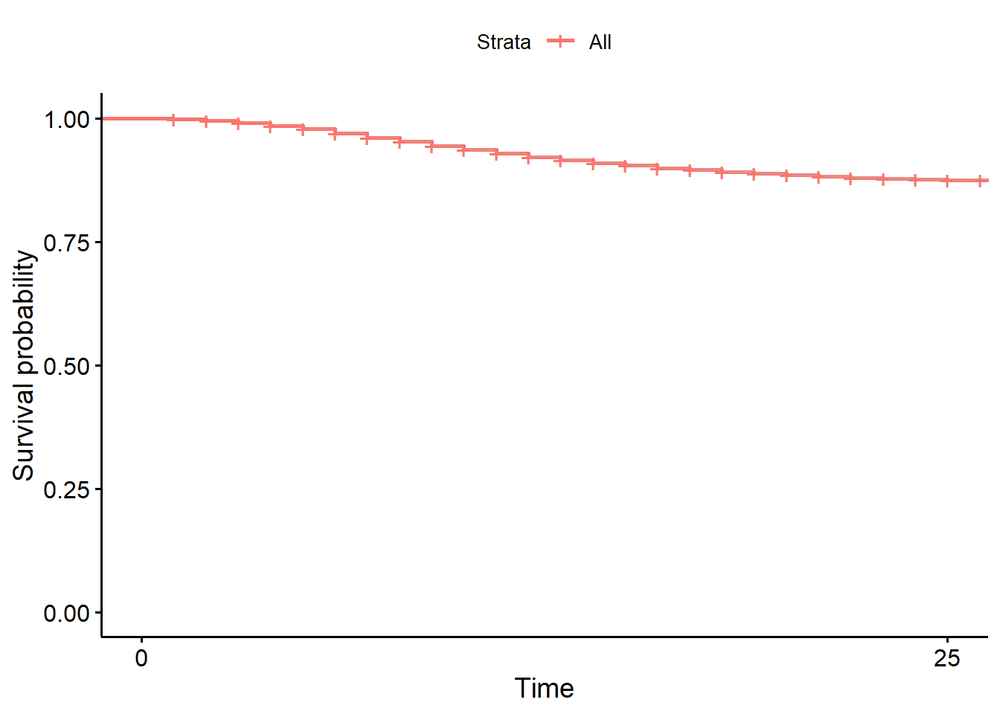
summary(km_global)Call: survfit(formula = surv_obj ~ 1, data = datos)
time n.risk n.event survival std.err lower 95% CI upper 95% CI
-54 59567 1 1.000 1.68e-05 1.000 1.000
0 59566 31 0.999 9.49e-05 0.999 1.000
1 59535 98 0.998 1.91e-04 0.997 0.998
2 59430 176 0.995 2.93e-04 0.994 0.995
3 59184 260 0.990 3.98e-04 0.990 0.991
4 58681 349 0.985 5.05e-04 0.984 0.986
5 57984 401 0.978 6.05e-04 0.977 0.979
6 57043 475 0.970 7.06e-04 0.968 0.971
7 55697 519 0.961 8.03e-04 0.959 0.962
8 54285 481 0.952 8.85e-04 0.950 0.954
9 52649 474 0.944 9.61e-04 0.942 0.945
10 50839 420 0.936 1.03e-03 0.934 0.938
11 48758 370 0.929 1.08e-03 0.927 0.931
12 46503 363 0.921 1.14e-03 0.919 0.924
13 44589 293 0.915 1.18e-03 0.913 0.918
14 42456 261 0.910 1.23e-03 0.907 0.912
15 40580 263 0.904 1.27e-03 0.901 0.906
16 38833 201 0.899 1.31e-03 0.897 0.902
17 36919 178 0.895 1.34e-03 0.892 0.897
18 34905 144 0.891 1.37e-03 0.888 0.894
19 33324 126 0.888 1.40e-03 0.885 0.890
20 31704 109 0.885 1.42e-03 0.882 0.887
21 29454 111 0.881 1.45e-03 0.879 0.884
22 27781 55 0.880 1.47e-03 0.877 0.882
23 26554 56 0.878 1.49e-03 0.875 0.881
24 25194 45 0.876 1.50e-03 0.873 0.879
25 23689 40 0.875 1.52e-03 0.872 0.878
26 22439 27 0.874 1.53e-03 0.871 0.877
27 21098 21 0.873 1.54e-03 0.870 0.876
28 19805 162 0.866 1.63e-03 0.862 0.869Kaplan-Meier por SEXO
km_sexo <- survfit(surv_obj ~ SEXO, data = datos)
ggsurvplot(km_sexo, data = datos, conf.int = TRUE, pval = TRUE, legend.title = "Sexo")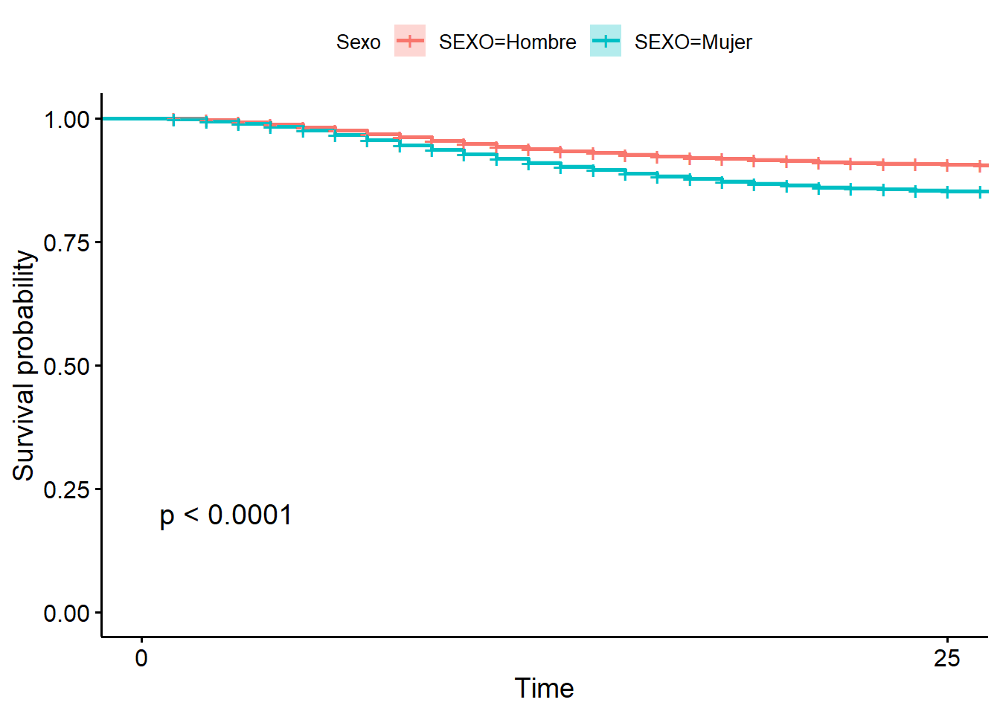
summary(km_sexo)Call: survfit(formula = surv_obj ~ SEXO, data = datos)
SEXO=Hombre
time n.risk n.event survival std.err lower 95% CI upper 95% CI
0 25378 10 1.000 0.000125 0.999 1.000
1 25368 25 0.999 0.000233 0.998 0.999
2 25338 62 0.996 0.000387 0.995 0.997
3 25241 100 0.992 0.000551 0.991 0.993
4 25042 111 0.988 0.000689 0.986 0.989
5 24776 152 0.982 0.000842 0.980 0.983
6 24382 165 0.975 0.000983 0.973 0.977
7 23800 177 0.968 0.001116 0.966 0.970
8 23207 159 0.961 0.001226 0.959 0.964
9 22532 169 0.954 0.001337 0.951 0.957
10 21761 141 0.948 0.001426 0.945 0.951
11 20837 126 0.942 0.001506 0.939 0.945
12 19882 101 0.937 0.001572 0.934 0.940
13 19064 83 0.933 0.001627 0.930 0.936
14 18165 66 0.930 0.001674 0.927 0.933
15 17377 72 0.926 0.001728 0.923 0.929
16 16598 64 0.922 0.001778 0.919 0.926
17 15776 51 0.919 0.001820 0.916 0.923
18 14935 33 0.917 0.001850 0.914 0.921
19 14247 28 0.916 0.001878 0.912 0.919
20 13526 31 0.914 0.001911 0.910 0.917
21 12581 35 0.911 0.001953 0.907 0.915
22 11890 19 0.910 0.001979 0.906 0.913
23 11368 18 0.908 0.002004 0.904 0.912
24 10786 13 0.907 0.002025 0.903 0.911
25 10156 17 0.905 0.002055 0.901 0.910
26 9604 8 0.905 0.002070 0.901 0.909
27 9072 10 0.904 0.002092 0.900 0.908
28 8521 48 0.899 0.002205 0.894 0.903
SEXO=Mujer
time n.risk n.event survival std.err lower 95% CI upper 95% CI
-54 34189 1 1.000 2.92e-05 1.000 1.000
0 34188 21 0.999 1.37e-04 0.999 1.000
1 34167 73 0.997 2.85e-04 0.997 0.998
2 34092 114 0.994 4.22e-04 0.993 0.995
3 33943 160 0.989 5.59e-04 0.988 0.990
4 33639 238 0.982 7.16e-04 0.981 0.984
5 33208 249 0.975 8.49e-04 0.973 0.977
6 32661 310 0.966 9.90e-04 0.964 0.968
7 31897 342 0.955 1.13e-03 0.953 0.957
8 31078 322 0.945 1.24e-03 0.943 0.948
9 30117 305 0.936 1.35e-03 0.933 0.938
10 29078 279 0.927 1.44e-03 0.924 0.930
11 27921 244 0.919 1.51e-03 0.916 0.922
12 26621 262 0.910 1.60e-03 0.907 0.913
13 25525 210 0.902 1.67e-03 0.899 0.905
14 24291 195 0.895 1.73e-03 0.892 0.898
15 23203 191 0.888 1.80e-03 0.884 0.891
16 22235 137 0.882 1.85e-03 0.878 0.886
17 21143 127 0.877 1.90e-03 0.873 0.881
18 19970 111 0.872 1.94e-03 0.868 0.876
19 19077 98 0.867 1.98e-03 0.864 0.871
20 18178 78 0.864 2.02e-03 0.860 0.868
21 16873 76 0.860 2.06e-03 0.856 0.864
22 15891 36 0.858 2.08e-03 0.854 0.862
23 15186 38 0.856 2.10e-03 0.852 0.860
24 14408 32 0.854 2.12e-03 0.850 0.858
25 13533 23 0.852 2.14e-03 0.848 0.857
26 12835 19 0.851 2.16e-03 0.847 0.855
27 12026 11 0.850 2.17e-03 0.846 0.855
28 11284 114 0.842 2.29e-03 0.837 0.846Prueba log-rank por SEXO
survdiff(surv_obj ~ SEXO, data = datos)Call:
survdiff(formula = surv_obj ~ SEXO, data = datos)
N Observed Expected (O-E)^2/E (O-E)^2/V
SEXO=Hombre 25378 2094 2783 171 300
SEXO=Mujer 34189 4416 3727 127 300
Chisq= 300 on 1 degrees of freedom, p= <2e-16 Modelo Cox proporcional: SEXO + EDAD
modelo_cox1 <- coxph(surv_obj ~ SEXO + EDAD, data = datos)
summary(modelo_cox1)Call:
coxph(formula = surv_obj ~ SEXO + EDAD, data = datos)
n= 59567, number of events= 6510
coef exp(coef) se(coef) z Pr(>|z|)
SEXOMujer 0.421506 1.524255 0.026533 15.89 <2e-16 ***
EDAD 0.053043 1.054475 0.000762 69.61 <2e-16 ***
---
Signif. codes: 0 '***' 0.001 '**' 0.01 '*' 0.05 '.' 0.1 ' ' 1
exp(coef) exp(-coef) lower .95 upper .95
SEXOMujer 1.524 0.6561 1.447 1.606
EDAD 1.054 0.9483 1.053 1.056
Concordance= 0.753 (se = 0.003 )
Likelihood ratio test= 5081 on 2 df, p=<2e-16
Wald test = 5095 on 2 df, p=<2e-16
Score (logrank) test = 5315 on 2 df, p=<2e-16logLik(modelo_cox1)'log Lik.' -67474.92 (df=2)zph_sexo <- cox.zph(modelo_cox1)
zph_sexo chisq df p
SEXO 18.16 1 2.0e-05
EDAD 2.83 1 0.092
GLOBAL 21.01 2 2.7e-05plot(zph_sexo)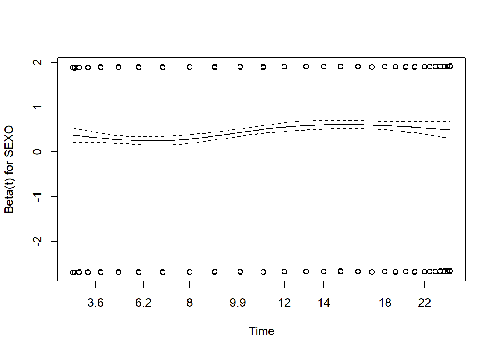
modelo_cox2 <- coxph(surv_obj ~ strata(SEXO) + EDAD, data = datos)
summary(modelo_cox2)Call:
coxph(formula = surv_obj ~ strata(SEXO) + EDAD, data = datos)
n= 59567, number of events= 6510
coef exp(coef) se(coef) z Pr(>|z|)
EDAD 0.053048 1.054480 0.000762 69.62 <2e-16 ***
---
Signif. codes: 0 '***' 0.001 '**' 0.01 '*' 0.05 '.' 0.1 ' ' 1
exp(coef) exp(-coef) lower .95 upper .95
EDAD 1.054 0.9483 1.053 1.056
Concordance= 0.742 (se = 0.003 )
Likelihood ratio test= 4774 on 1 df, p=<2e-16
Wald test = 4846 on 1 df, p=<2e-16
Score (logrank) test = 5039 on 1 df, p=<2e-16logLik(modelo_cox2)'log Lik.' -63385.13 (df=1)zph_sexo2 <- cox.zph(modelo_cox2)
zph_sexo2 chisq df p
EDAD 2.84 1 0.092
GLOBAL 2.84 1 0.092plot(zph_sexo2)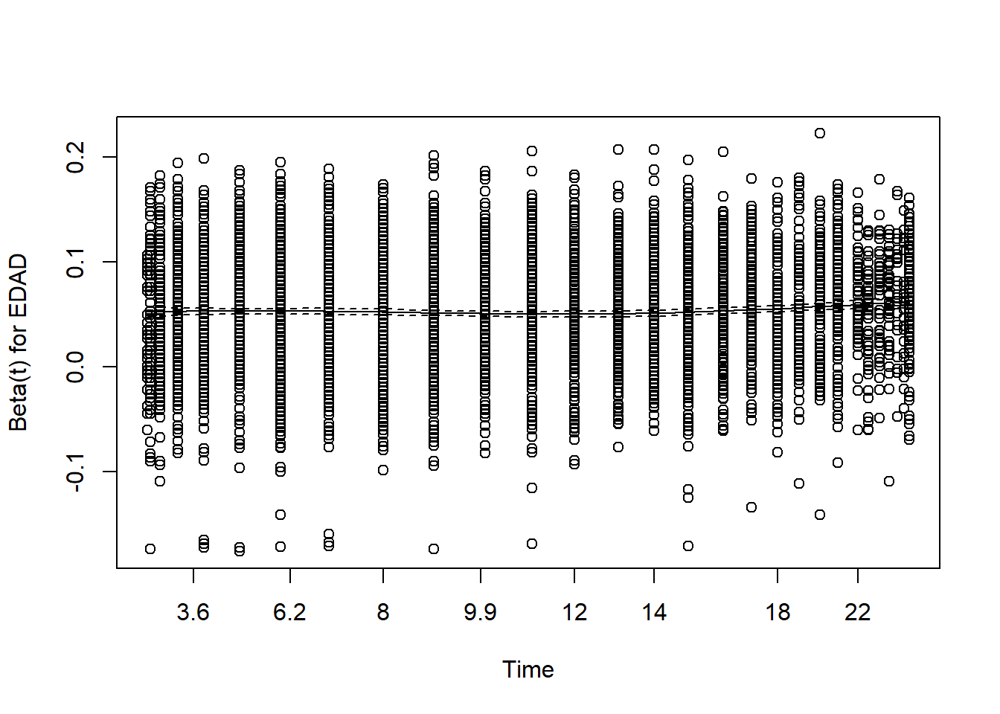
Modelo Cox con múltiples comorbilidades
modelo_cox3 <- coxph(surv_obj ~ strata(SEXO) + EDAD + DIABETES + EPOC + INMUSUPR +
HIPERTENSION + OBESIDAD + RENAL_CRONICA, data = datos)
summary(modelo_cox3)Call:
coxph(formula = surv_obj ~ strata(SEXO) + EDAD + DIABETES + EPOC +
INMUSUPR + HIPERTENSION + OBESIDAD + RENAL_CRONICA, data = datos)
n= 58962, number of events= 6379
(605 observations deleted due to missingness)
coef exp(coef) se(coef) z Pr(>|z|)
EDAD 0.0479019 1.0490678 0.0008711 54.988 < 2e-16 ***
DIABETES1 0.4598303 1.5838052 0.0280086 16.417 < 2e-16 ***
EPOC1 0.1895202 1.2086696 0.0544225 3.482 0.000497 ***
INMUSUPR1 0.3193117 1.3761802 0.0724209 4.409 1.04e-05 ***
HIPERTENSION1 0.1825436 1.2002665 0.0287725 6.344 2.23e-10 ***
OBESIDAD1 0.3432539 1.4095266 0.0287215 11.951 < 2e-16 ***
RENAL_CRONICA1 0.6844183 1.9826183 0.0497166 13.766 < 2e-16 ***
---
Signif. codes: 0 '***' 0.001 '**' 0.01 '*' 0.05 '.' 0.1 ' ' 1
exp(coef) exp(-coef) lower .95 upper .95
EDAD 1.049 0.9532 1.047 1.051
DIABETES1 1.584 0.6314 1.499 1.673
EPOC1 1.209 0.8274 1.086 1.345
INMUSUPR1 1.376 0.7266 1.194 1.586
HIPERTENSION1 1.200 0.8331 1.134 1.270
OBESIDAD1 1.410 0.7095 1.332 1.491
RENAL_CRONICA1 1.983 0.5044 1.799 2.186
Concordance= 0.766 (se = 0.003 )
Likelihood ratio test= 5650 on 7 df, p=<2e-16
Wald test = 5689 on 7 df, p=<2e-16
Score (logrank) test = 6429 on 7 df, p=<2e-16zph_modelo <- cox.zph(modelo_cox3)
zph_modelo chisq df p
EDAD 1.99 1 0.15853
DIABETES 33.55 1 7.0e-09
EPOC 6.59 1 0.01026
INMUSUPR 3.29 1 0.06953
HIPERTENSION 12.09 1 0.00051
OBESIDAD 2.24 1 0.13463
RENAL_CRONICA 29.67 1 5.1e-08
GLOBAL 72.55 7 4.5e-13plot(zph_modelo)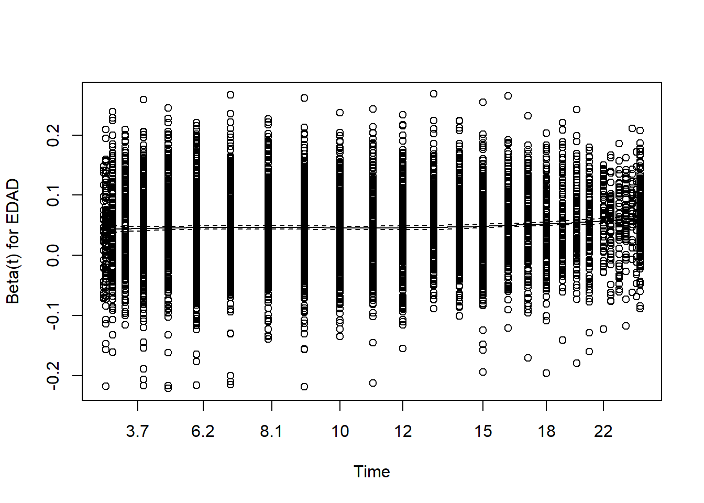
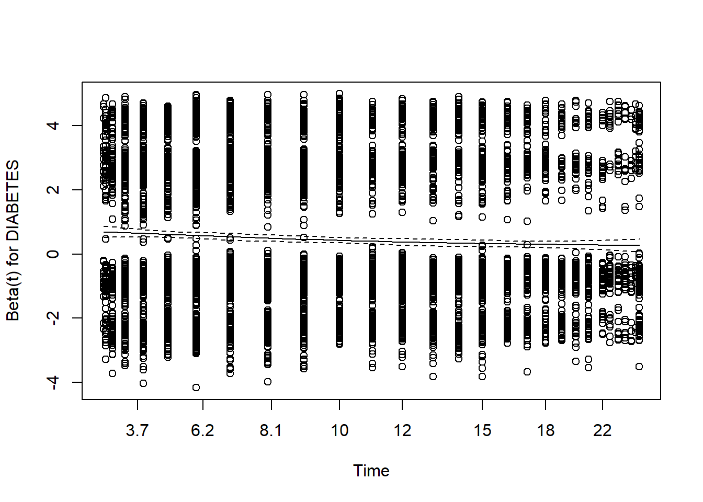
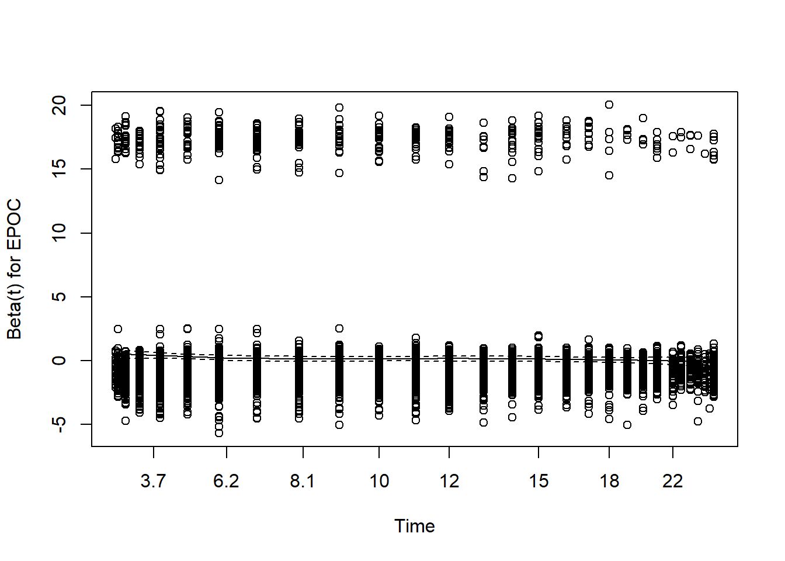
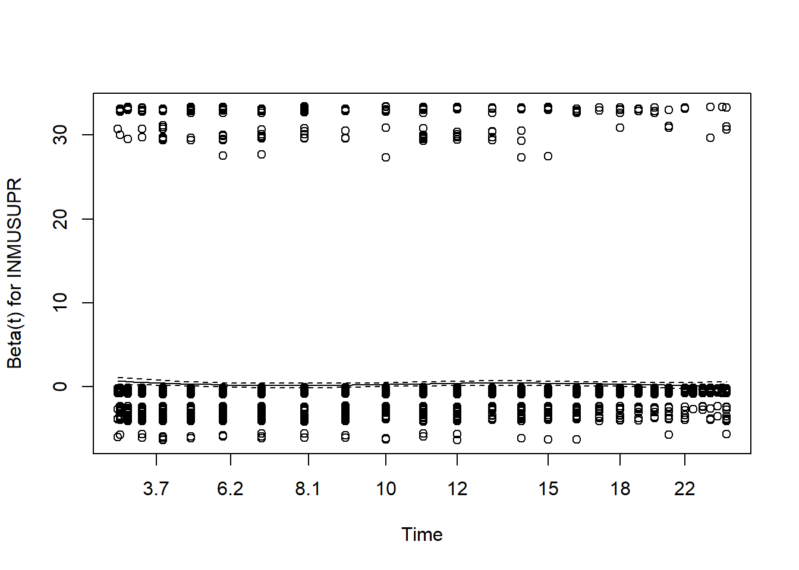
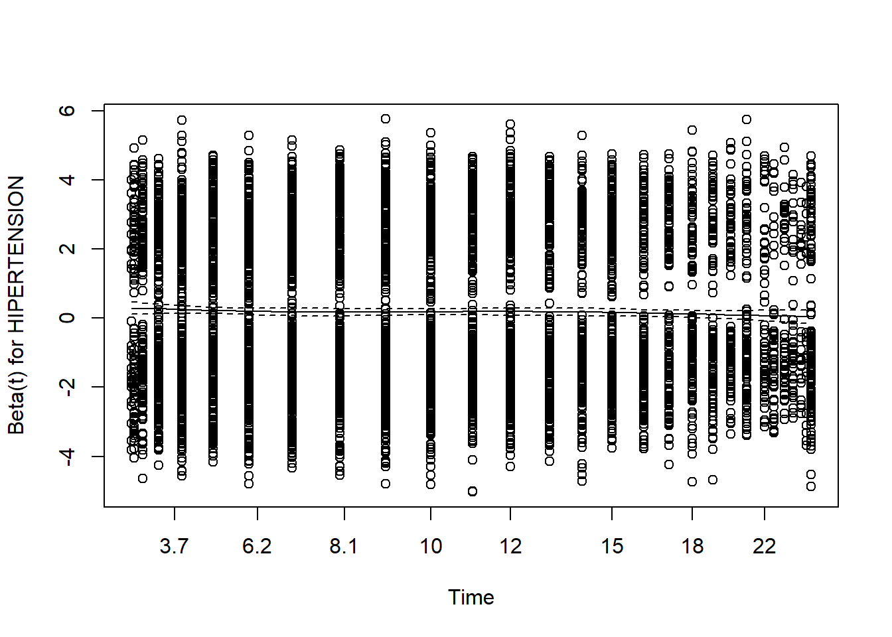
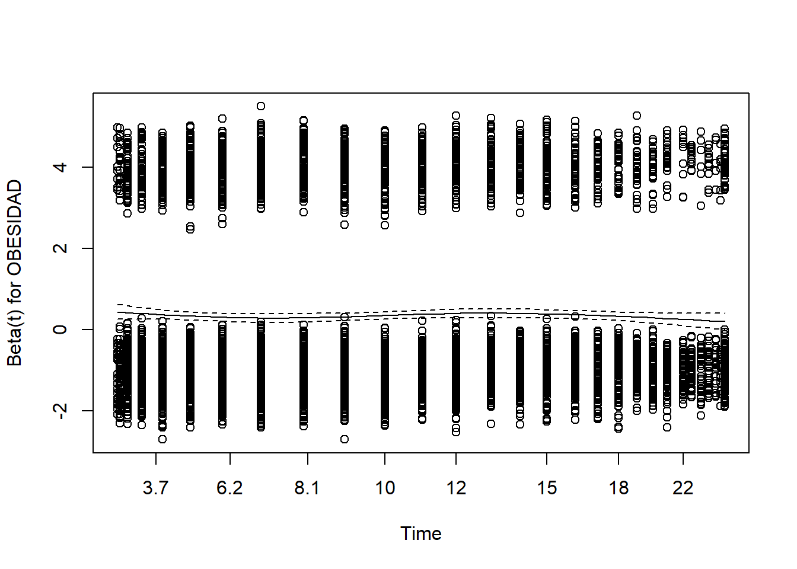
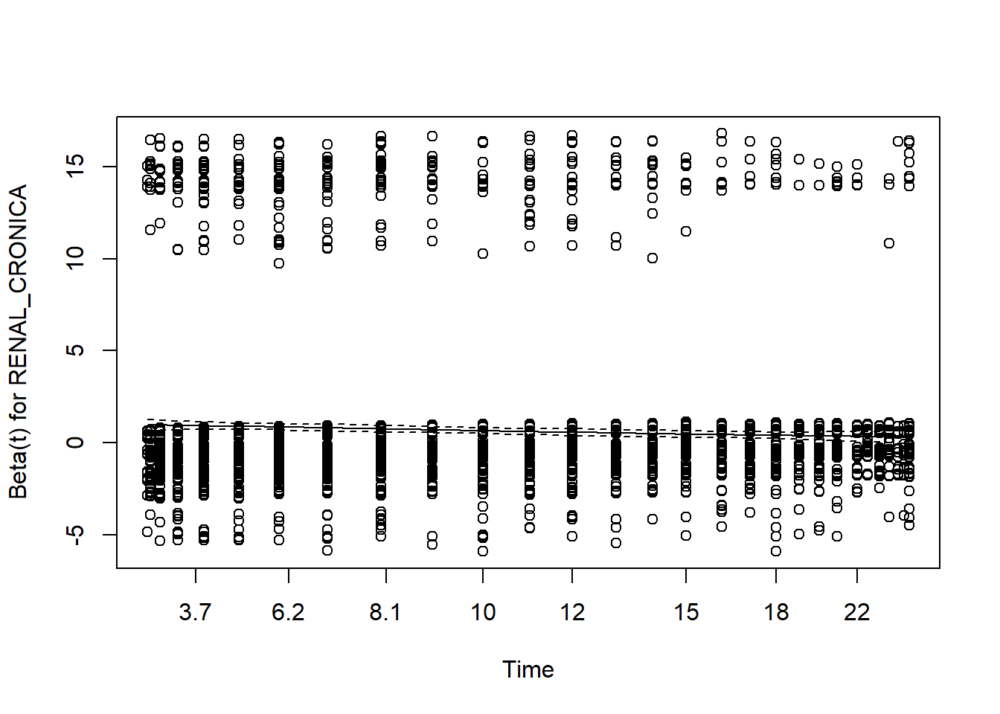
Modelo Cox con interacción OBESIDAD * HIPERTENSION
modelo_cox3 <- coxph(surv_obj ~ SEXO + EDAD + OBESIDAD * HIPERTENSION, data = datos)
summary(modelo_cox3)Call:
coxph(formula = surv_obj ~ SEXO + EDAD + OBESIDAD * HIPERTENSION,
data = datos)
n= 59059, number of events= 6401
(508 observations deleted due to missingness)
coef exp(coef) se(coef) z Pr(>|z|)
SEXOMujer 0.4587933 1.5821637 0.0268205 17.106 < 2e-16 ***
EDAD 0.0502757 1.0515609 0.0008391 59.918 < 2e-16 ***
OBESIDAD1 0.4832973 1.6214119 0.0383334 12.608 < 2e-16 ***
HIPERTENSION1 0.4392093 1.5514799 0.0316175 13.891 < 2e-16 ***
OBESIDAD1:HIPERTENSION1 -0.2421865 0.7849098 0.0564385 -4.291 1.78e-05 ***
---
Signif. codes: 0 '***' 0.001 '**' 0.01 '*' 0.05 '.' 0.1 ' ' 1
exp(coef) exp(-coef) lower .95 upper .95
SEXOMujer 1.5822 0.6320 1.5011 1.6676
EDAD 1.0516 0.9510 1.0498 1.0533
OBESIDAD1 1.6214 0.6167 1.5041 1.7479
HIPERTENSION1 1.5515 0.6445 1.4583 1.6507
OBESIDAD1:HIPERTENSION1 0.7849 1.2740 0.7027 0.8767
Concordance= 0.764 (se = 0.003 )
Likelihood ratio test= 5459 on 5 df, p=<2e-16
Wald test = 5292 on 5 df, p=<2e-16
Score (logrank) test = 5689 on 5 df, p=<2e-16Prueba de proporcionalidad de riesgos (test de Schoenfeld)
cox.zph(modelo_cox1) chisq df p
SEXO 18.16 1 2.0e-05
EDAD 2.83 1 0.092
GLOBAL 21.01 2 2.7e-05Riesgos proporcionales por sexo
ggcoxzph(cox.zph(modelo_cox1))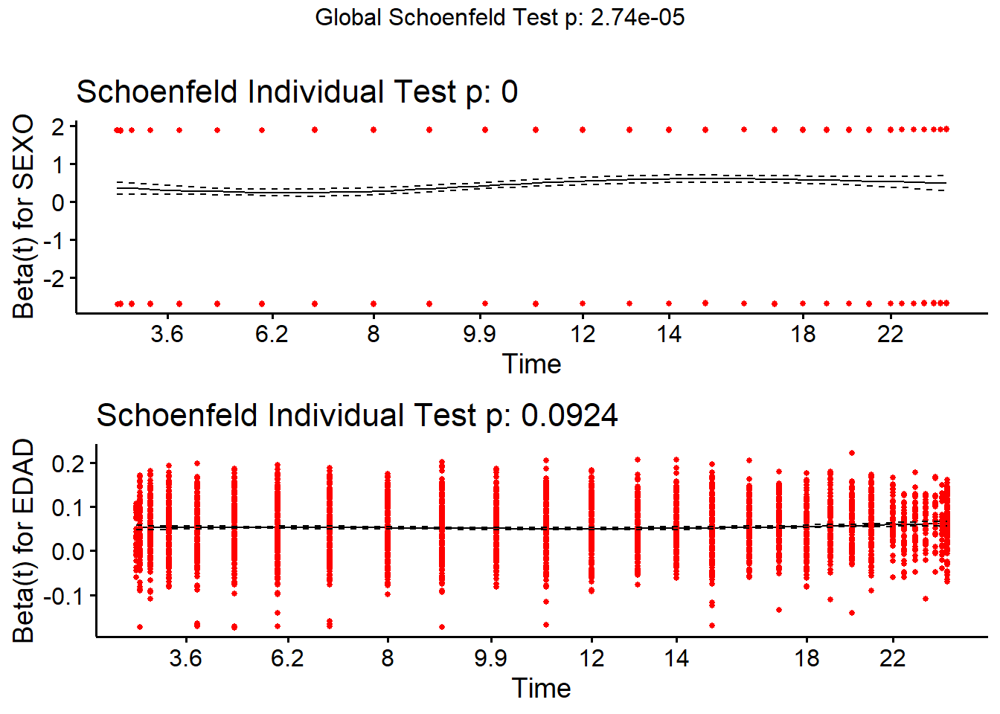
Supervivencia estimada por sexo
ggsurvplot(survfit(modelo_cox1, newdata = data.frame(SEXO = c("Hombre", "Mujer"), EDAD = mean(datos$EDAD, na.rm = TRUE))), data=datos,
conf.int = TRUE, legend.labs = c("Hombre", "Mujer"), legend.title = "Sexo")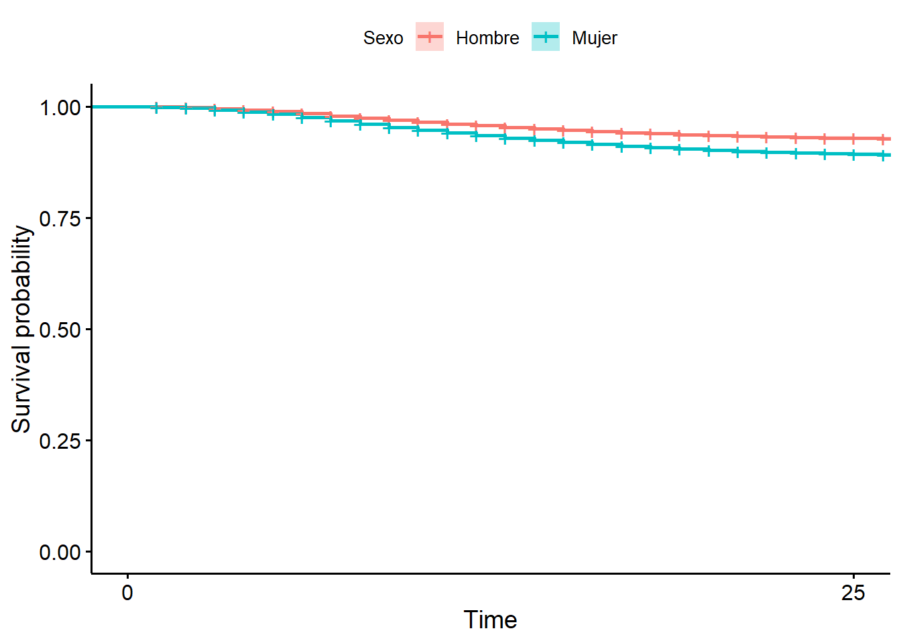
Función de riesgo suavizada por sexo
ggsurvplot(km_sexo, fun = "cumhaz", conf.int = TRUE, legend.title = "Sexo")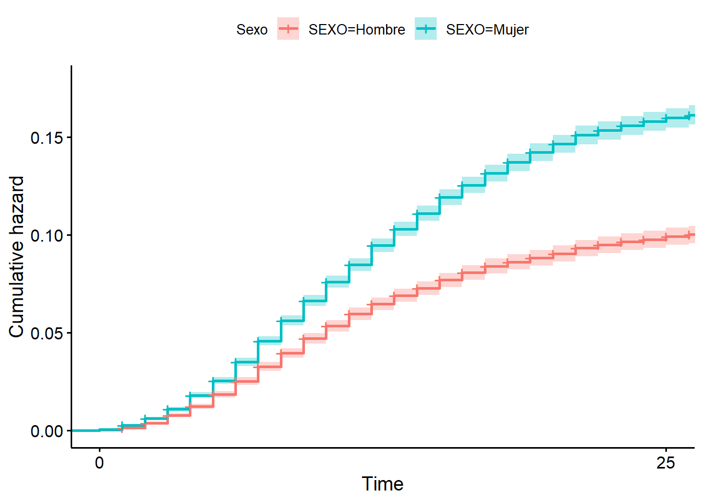
Función de riesgo suavizada (escala logarítmica)
# Guardar el resultado de ggsurvplot
g <- ggsurvplot(km_sexo, fun = "cumhaz", conf.int = TRUE, legend.title = "Sexo")
# Agregar la escala logarítmica al eje Y
g$plot + scale_y_log10()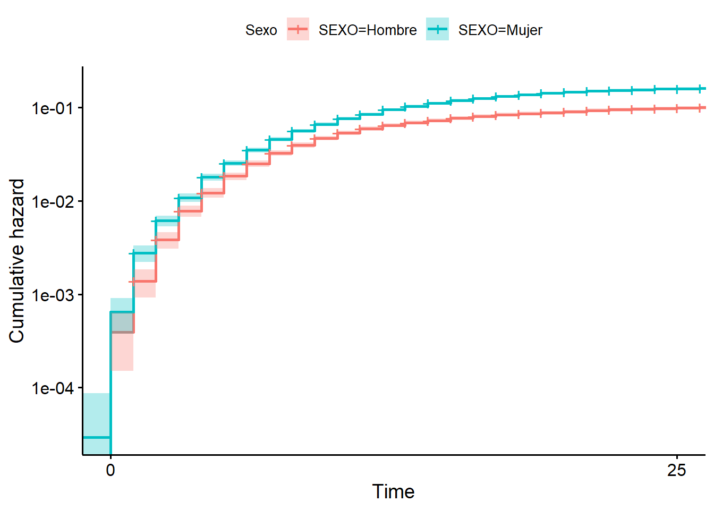
Riesgo individual estimado (tipo predict pi)
# Riesgo lineal predicho
pi_xb <- predict(modelo_cox1, type = "lp")
# Probabilidad tipo 1 - 0.9984^exp(xb)
datos <- datos %>% mutate(pi = pi_xb, di = 1 - 0.9984^exp(pi))
head(datos[, c("pi", "di")])# A tibble: 6 × 2
pi di
<dbl> <dbl>
1 1.72 0.00888
2 1.45 0.00682
3 -0.613 0.000867
4 1.08 0.00472
5 0.766 0.00344
6 0.180 0.00191